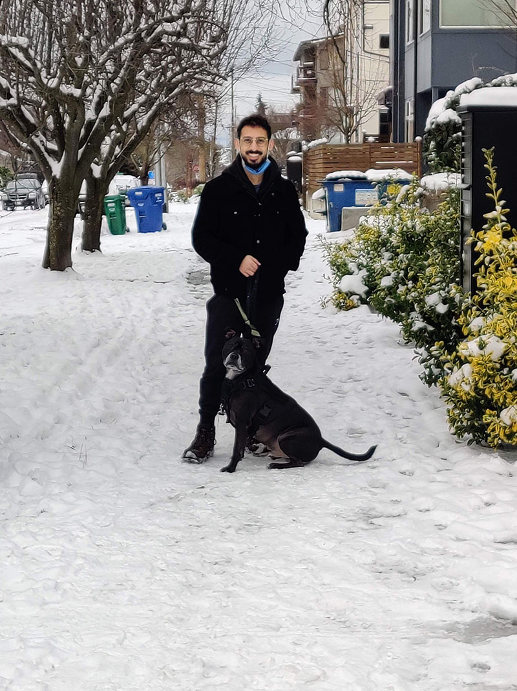

Brandons IT161 Portal
Bienvenido! Welcome!
Welcome to my It 161 portal! A little bit about me. I started my journey into the world of web development in order to help my dad run his dog sanctuary, Green Dog Oasis. He designed his own website on the Wix platform and frankly, it needed some work. So I started learning how to code and I've already redesigned the website during IT 162. The process for the redesign taught me a lot and I can already feel myself growing confident in my coding, but theres still so much to learn.
I'm a huge gamer and love diving into a good narrative or souls-like. Currently, I'm playing Elden Ring, another game by FromSoftware. My friend even got into the series, which is great because the game lets you explore the world and defeat the bosses in multiplayer mode.